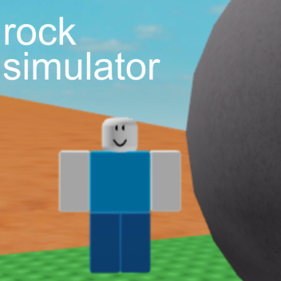
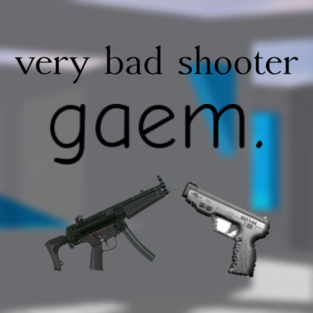

Hey, my name is Sion Yoon!
I am currently a Grade 8 student at Yorkson Creek Middle School. This is my portfolio for Exhibition Of Wonder!
I strive to learn more about programming, designing, and ideating cool stuffs, like this website for example!
I try to make other's days better by giving them a helping hand!
"The only impossible journey is the one you never begin."
Tony Robbins - American author, coach, motivational speaker

My Professions / Hobbies
Programming
I love programming. Ever since I started learning about how to make Roblox games when I was about 10, I knew this was something that was for me. I love what it can do, and I think a lot of people don't realise how interesting and important programming really is. Programming isn't cakewalk either, which is an another aspect of programming I like. It needs you to use your problem solving skills. As you go through the steps and challenges, you feel the satisfaction that YOU made this. It's awesome to feel that! You made this work, all from your fingertips.
I tried game developing(Like Roblox), some console programming(Like Python), and a LOT of web developing(What you're looking at!).
Video Editting
Nope, this isn't about some beginner CapCut editting. I have a YouTube channel, in which I occasionally post highlight videos of me playing a video game. Video editting is not a joke. A lot of tools exist to make it a bit easier, but it is still surprisingly difficult. I had to find this out the hard way. Like programming, I love video editting because, like programming, you can see your final result and be proud of it, and realise a lot of people can access it and have fun with it. You can tell I like to do stuffs digitally, don't you?
DJing music
Not to brag or anything, but I got extending on my Music EXPO, so you can tell I really like music. Music is a fundamental part of everyone's life, and I just love what people can do with it, including myself! I liked to play some instruments, like piano, before I just quit because I didn't really like doing music professionally and seriously. Usually, I just make 2 musics blend into each other, or in other words, make "mash-ups".
My Projects
Games


Like I said, I made a few Roblox games. These I made with my friend, so it was super fun to make them! Unfortunately, you cannot play these at school. But just so you know, these games were made for fun, so don't expect a top-class game :)
Terminal Games
What is a terminal game?
A terminal game is a simple game that you play in a console window. It is unlike the games with actual graphics.

Way less interesting than the Roblox games are the raw, no graphics, black and white windowed games. Making colorful Roblox games to this were definitely hard to adjust to. :/
If you want to install this at home and play it for whatever reason, you have to install Python.
Videos
I often make videos about a specific game called "Geometry Dash". My YouTube channel is filled with these contents! Editting videos are harder than you think and is time consuming ;(
Like and subscribe and I will give you a gluten-free cookie
Audio
See, none of these are actually serious projects. I just like to goof around with some audios, like DJing! To listen to these, turn on the audio and wear the earphone!
Why this project?
Like I said, I love programming, I already learned it previously, I like the result that comes out of it, blah blah blah. Those are the reasons you already know about. But another reason on why I chose this is that I want to share what a determined programmer can do. I want to spread the joy of programming. It surely is challenging, but I'm sure if you get into it, you will be immersed by the iceberg of coding. I also chose this because it's perfect for one of Exhibition Of Wonder's theme: Preserverance. Roadblocks are extremely common in programming, and while doing this project and even the prototype only, I was struggling. I even considered just using AI for everything and call it a day. But again, that's unethical, and doing it this way is way more fun and rewarding!
Contacts
There are a lot of ways to contact me:
Look up and tell me your comments!
E-mail me to jyoon4184@langleyschools.caMy different social medias:
YouTube GitHub FreeCodeCampCredits
My companion for the website (Not saying who :) )
Three.JS library Vanta.JS library Model Viewer library Roblox SketchfabDifferent portfolio websites by actual talented developers for inspiration